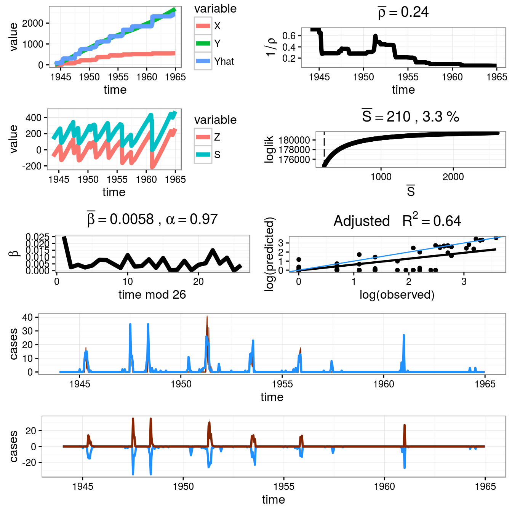

Chapter 2 Bayesian Infectious Dynamics Model in Discrete Time
2.1 Introduction
Modeling the infectious disease dynamics can be done at individual level as well as population level, moreover, both provide an accurate description of the spread (progress) of infectious diseases in the coresponding situation. Individual-level model allows for the heterogeneity in a population via the individual covariates(Some packages:). While, when the analysis dataset is aggregated at the regular interval and information regarding individual movement and contact behavior is not available, model on population level is more suitable.
Compartmental models are usually written using the ordinary differential equations and divide the population into serveral distinct compartments(categories) according to disease status, which is widely applied in the continuous times deterministic model previously (Cai et al. 2013). Majority of them are based on the assumption that all the individuals are equally likely to contact any other individuals in that population. Actually, when the size of compartments is large enough, the assumption of homogeneous mixing is indeed reasonal(appropriate). However, the situation at the most onset of epidemics is usually quite different, since most of the individuals in the population are susceptible and the number of infected is small. In addition, stochastic(demographical and environmental stochasticity) model based on a probability of disease contagion provide a more natural description of the transmission of infectious diseases, especially on those occasions where the data have been recorded over predetermined discrete time intervals(Allen 2014) (Corber\a’an-Vallet and Santonja 2014). Consequently, we introduce two stochastic compartmental model in discrete time (Finkenstädt and Grenfell 2000) from the publised literatures as well as the analysis codes, aiming to provide a deeper insight into the underlying processes driving historical population dynamics. In spite of this, we also give serveral continuous times deterministic models and all of them can be found in Github.
2.2 Model and Parameters
Firstly, let \(y_{i}\) denote the number of hopspitalization for the infectious disease reported at time \(t( t \in {1,2,3,..,T})\).The time can be formulated as week, month or season. At the first level of the model hierarchy, we assume that the observations follow a binomial distribution: \[ \begin{aligned} y_{t} \sim Bi(i_{t},\rho) \end{aligned} \] where \(i_{t}\) is the number of new infectious at time \(t\) and \(\rho\) is the probability of being hospitalized for the infectious disease, which also illustrates the correcting factor for geographical discrepancy. The number of newly infected individuals at time \(t\) can be modeled as \[ \begin{aligned} i_{t} \sim Bi(S_{t-1},P_{t}) \end{aligned} \] where \(S_{t-1}\) is the susceptible population at time \(t-1\) and \(P_{t}\) is the probability of becoming infected at time \(t\). Here, you also can use the Possion distribution (Note: Which distribution to choose depends on the population you analysis. If the population is finite, the Binomial distribution is considered).
For Susceptible-Infected(SI), SIR(Susceptible-Infected-Recovery), SIRS (Susceptible-Infected-Recovery-Susceptible), and so on, all the infectious models can use the bayesian method to obtain the posterior distribution of the model parameters. Here, we take the SIR model with constant population for example, and the number of susceptible,\(S_{t}\), infected, \(I_{t}\), and the recovery,\(R_{t}\) at time \(t\) are given the followed recursion equtions: \[ \begin{aligned} S_{t}=S_{t-1}-i_{t}+N*\mu-\mu*S_{t-1} \\\\ I_{t}=I_{t-1}-\gamma*I_{t-1}+i_{t}-I_{t-1}*\mu \\\\ R_{t}=R_{t-1}+\gamma*I_{t-1}-R_{t-1}*\mu \\\\ \end{aligned} \] where \(\mu\) is the death rate and the birth rate,\(\gamma\) is the proportion of infectious individuals that recover per unit time; N is the total population size.
Finally, we need to model the parameter \(P_{t}\) in the second equation taking into consideration for the following condition. Firstly, this probability must lie in the interval 0-1.Secondly, \(P_{t}\) must considerate the transimissible nature of the infection and so dependence on the previous number of the infected individuals is advisable. This can be easily achieved by modeling the logit of \(P_{t}\), which is defined as \(logit(P-{t})=log(\frac{P_{t}}{(1-P_{t})})\). In particular, we model the \(logit(P_{t})\) as : \[ \begin{aligned} logit(P-{t})=log(\frac{P_{t}}{(1-P_{t})})=\alpha*log(i_{t-1})+r_{t} \end{aligned} \] where the \(exp{r_{t}}\) represents the time-varing transmission rate and the mixing parameter \(\alpha\) allows for heterogeneous mixing. Taking the mixing parameter \(\alpha=1\) would correspond to the assumption of mass action. The equation aboved can also be writen as: \[ \begin{aligned} P_{t}=\frac{i^{\alpha}_{t-1}*exp(r_{t})}{(1+i^{\alpha}_{t-1}*exp(r_{t}))}= (\frac{i^{\alpha}_{t-1}*exp(r_{t})}{(1+i^{\alpha}_{t-1}*exp(r_{t}))}+c,1) \end{aligned} \] In order to account for the occurrrance of new cases after the disease has faded out, we add the paramter \(c\) to the model, which represents a constant probability of becoming infected. Fox example, the population can be infected by the individuals outside the population under study. The Uniform distribution in the interval (0,0.01) is assigned to parameter \(c\).
The key feature of our model fformulation is the transimission rate, \(exp(r_{t})\), which is allowed to vary stochastically over time. Here, we present four alternative formulations of the SIR model in discrete time: Two stochastical formulation with different definations of transimmision rate and two deterministic formulations.
Alternative 1: Stochastical model with a deterministic seasonal transimmision rate \(exp(r_{t})\), where:
\[ \begin{aligned} r_{t}=r_{0}+\sum\limits_{k=1}^{K}(r_{2k-1}*sin(\frac{2k*\pi*t}{freq})+r_{2k}*cos(\frac{2k*\pi*t}{freq})) \end{aligned} \] The transimmision rate is allowed to vary over seasonally. However, there are no weekly random effects, the seasonal pattern repeats over time.- Alternative 2: Stochastical model where the transimmision rate is assumed to be constant over time, where: \[ \begin{aligned} exp(r_{t})=exp(r) \end{aligned} \]
Alternative 3: Deterministical model with a seasonal transimmision rate. Within the model formulation, the number of hospitalizations at time t is given by: \[ \begin{aligned} y_{t}=S_{t-1}*y_{t-1}*\lambda _{t} \end{aligned} \] where \(\lambda_{t}\), which is equivalent to the the paramter \(exp(r_{t})\), respresents the effective contact rate. Here we model the parameter \(\lambda_{t}\) as: \[ \begin{aligned} \lambda_{t}=r_{0}+\sum\limits_{k=1}^{K}(r_{2k-1}*sin(\frac{2k*\pi*t}{freq})+r_{2k}*cos(\frac{2k*\pi*t}{freq})) \end{aligned} \]
Alternative 4: Deterministical model with a constant transimmision rate. This model is similar to the previous one with \(\lambda_{t}=\lambda\). The number of the hospitalizations at time \(t\) is \(y_{t}=S_{t-1}*y_{t-1}*\lambda\).
All the analysis codes can be found in the author’s website. Therefore, just try it!
2.3 Packages
Here, i will introduce another R package to fit the TSIR model for infectious disease. You can install the tsiR package via devtools from the author’s Github. The method used in the package comes from the paper: Predictability in a highly stochastic system: final size of measles epidemics in small populations . Basic formula of analysis dataset consists five clolumns including time, cases,births, pop and IP(infectious period) can be created using the tsiRdata function. Other functions can be seen in the fellow part:
| Function | Purpose |
|---|---|
estpars |
Using simple regression: reconstructs susceptibles and estimates parameters |
maxthreshold |
Using simple regression: optimizes the threshold parameter for sparse data |
mcmcestpars |
Using MCMC: reconstructions susceptibles and estimates parameters |
mcmctsir |
Using MCMC: reconstructions susceptibles, estimates parameters, and runs the simulation |
plotcases |
Plots just the cases data |
plotcomp |
Plots the data versus the simulations |
plotdata |
Plots the (interpolated) cases, births, and population time series |
plotres |
Plots the fitted regressions, reporting, susceptible reconstruction, estimated parameters, and the fit diagonstics |
runtsir |
Using simple regression: reconstructions suceptibles, estimates parameters, and runs the simulation |
simulatetsir |
Runs the simulation taking in the output from estpars or mcmcestpars |
tsiRdata |
Interpolates cases, births, and pop vectors to the generation time of the disease |
twentymeas |
Complete biweekly (IP=2) data sets from twenty UK cities |
Something need to be keep in mind is that the reconstruction for susceptible population in TSIR model is crutial. As the TSIR model assumes that all individuals will eventually become infected, the incidence must therefore track the number of births:
\[
\begin{aligned}
S_{t}=\overline{S}+Z_{t}
\end{aligned}
\] \[
\begin{aligned}
Z_{t+1}=\sum\limits_{i=1}^{t}(B_{i-d})-\sum\limits_{i=1}^{t}(\rho_{i}*C_{i})+\sum\limits_{i=1}^{t}(\mu_{i})+Z_{0}
\end{aligned}
\] Assuming \(\mu_{t}\) is small, then \(\\rho_{t}\) can be estimated using local regression between the cummulative observed cases and the cummulative births with the \(Z_{t}\) as the residuals of the regreesion. How to use the function can be obtained form the code ?function_name. Serveral arguments should be treated cautiously, including IP(infectious period in weeks),alpha(maxing parameter, set 0.97), sbar(mean number of susceptibles, can be estimated from dataset), seasonality( can be one of “standard”, “schoolterm” or “none”), regtype(regression used in susceptible reconstruction. Options are “gaussian”“,”lm“(linear model),”spline“(smooth.spline with 2.5 degrees freedom),”lowess“(with f = 2/3, iter = 1),”loess“(degree 1), and”user" which is just a user inputed vector), epidemics(whether to split the data up, two options: cont and break), threshold(cut off for a new epidemic if epidemics = “break”, can be fit by maximizing Rsquared predictions using the maxthreshold function, details can found (Caudron et al. 2014)).
2.4 Examples and Codes
Actually, we can use the estpars and mcmcestpars function to get the estimate parameters, *maxthreshold function for the thresthod parameter, mcmctsir and mcmctsir** to run the simulations on MCMC and simple regression respectively. Here, we use the dataset in tsiR package to carry out a simple analysis and corresponding codes are:
library(tsiR);require(kernlab)
require(ggplot2);require(reshape2);require(grid)## Loading required package: gridMoldMeas <- twentymeas[["Mold"]]
parms <- estpars(data=MoldMeas,alpha=0.97,IP=2)
tau <- maxthreshold(data=MoldMeas,parms=parms,IP=2)
MoldRes <- simulatetsir(data=MoldMeas,parms=parms,epidemics="break",threshold=tau,nsim=10,method="negbin")
plotres(MoldRes)
2.5 Conclusion
Utimately, TSIR model with stochastical effect from environment and demographics provides a knowledge on the dynamics of infectious diseases, while possible improvements include the use of statistical models such as trajectory matching or hidden Markov models to infer a biweekly incidence rate rather than using a linear interpolant is essential. Fortunately, Prof. Aaron A. King has established a pomp package, which provides a very general realization of nonliner partially-observed Markov processes model. I will give a short introduction about the analysis on Mumps dynamics using pomp package in the next chapter.
References
Cai, Yongli, Xixi Wang, Weiming Wang, and Min Zhao. 2013. “Stochastic Dynamics of an SIRS Epidemic Model with Ratio-Dependent Incidence Rate.” Abstract and Applied Analysis 2013. Hindawi Publishing Corporation: 1–11. doi:10.1155/2013/172631.
Allen, Edward J. 2014. “Derivation and Computation of Discrete-Delay and Continuous-Delay SDEs in Mathematical Biology.” MBE 11 (3). American Institute of Mathematical Sciences (AIMS): 403–25. doi:10.3934/mbe.2014.11.403.
Corber\a’an-Vallet, Ana, and Francisco J. Santonja. 2014. “A Bayesian SIRS Model for the Analysis of Respiratory Syncytial Virus in the Region of Valencia, Spain.” Biom. J. 56 (5). Wiley-Blackwell: 808–18. doi:10.1002/bimj.201300194.
Finkenstädt, B. F., and B. T. Grenfell. 2000. “Time Series Modelling of Childhood Diseases: A Dynamical Systems Approach.” J. R. Stat. Soc. Ser. C 49 (2). Wiley-Blackwell: 187–205. doi:10.1111/1467-9876.00187.
Caudron, Q., A. S. Mahmud, C. J. E. Metcalf, M. Gottfrethsson, C. Viboud, A. D. Cliff, and B. T. Grenfell. 2014. “Predictability in a Highly Stochastic System: Final Size of Measles Epidemics in Small Populations.” Journal of The Royal Society Interface 12 (102). The Royal Society: 20141125–5. doi:10.1098/rsif.2014.1125.